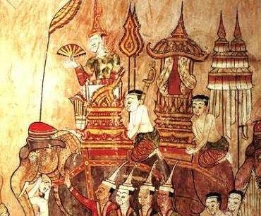
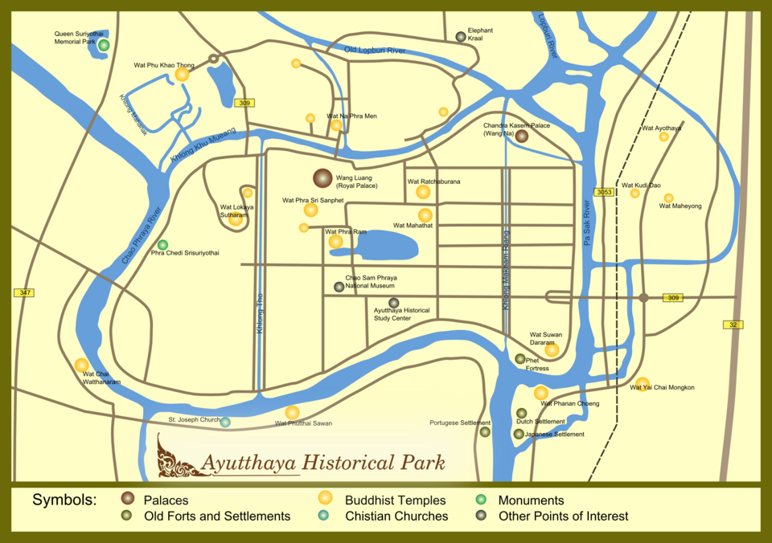
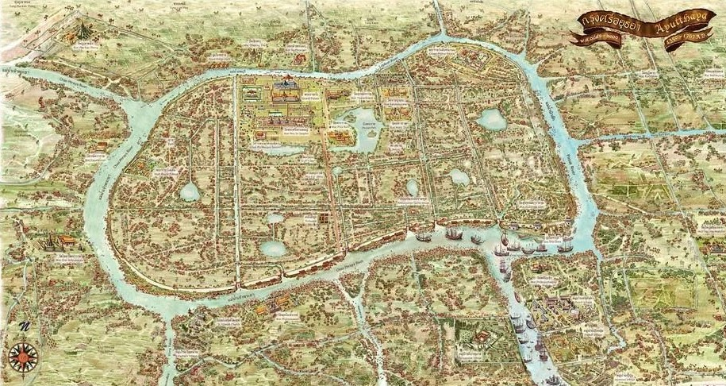

01 • ANCIENT CITY
กรุงศรีอยุธยา
อยุธยาได้รับการสถาปนาเป็นราชธานี ในช่วงคริสต์ศตวรรษที่ 14 และพัฒนาเป็นเมืองสำคัญ ของภูมิภาคเอเชียตะวันออกเฉียงใต้
ย้อนรอยเรื่องราวของกรุงศรีอยุธยา ราชธานีสำคัญของสยาม ตั้งแต่การก่อตั้งเมือง ภูมิศาสตร์ แผนผังเมือง การค้าระหว่างประเทศ และศิลปวัฒนธรรม
กรุงศรีอยุธยาเป็นราชธานีของสยาม ตั้งแต่ พ.ศ. 1893 ถึง พ.ศ. 2310 เป็นศูนย์กลางสำคัญทั้งด้านการเมือง เศรษฐกิจ การค้า และวัฒนธรรม ทำเลที่ตั้งของเมืองมีแม่น้ำล้อมรอบ ทำให้เกิดความได้เปรียบทั้งด้านการป้องกันเมือง การเดินทาง และการติดต่อค้าขายกับดินแดนต่าง ๆ
อยุธยาได้รับการสถาปนาเป็นราชธานี ในช่วงคริสต์ศตวรรษที่ 14 และพัฒนาเป็นเมืองสำคัญ ของภูมิภาคเอเชียตะวันออกเฉียงใต้

ความรุ่งเรืองของอยุธยาปรากฏผ่าน สถาปัตยกรรม ประติมากรรม จิตรกรรม และงานช่าง ซึ่งยังคงเป็นหลักฐานสำคัญ ของประวัติศาสตร์ไทย
เหตุการณ์สำคัญที่ช่วยให้เข้าใจ พัฒนาการของกรุงศรีอยุธยา ตั้งแต่การก่อตั้งจนถึงการสิ้นสุด ของราชธานี
สมเด็จพระรามาธิบดีที่ 1 หรือพระเจ้าอู่ทอง ทรงสถาปนากรุงศรีอยุธยา เป็นราชธานี
อยุธยาขยายตัวอย่างต่อเนื่อง และมีการติดต่อค้าขาย กับดินแดนต่าง ๆ ทั้งในเอเชียและยุโรป
มีชุมชนพ่อค้าจากหลายประเทศ เข้ามาตั้งถิ่นฐาน ทำให้อยุธยาเป็นเมือง ที่มีความหลากหลายทางวัฒนธรรม
กรุงศรีอยุธยาเสียกรุง และสิ้นสุดสถานะราชธานี หลังจากนั้นศูนย์กลางอำนาจ จึงย้ายไปยังกรุงธนบุรี
อยุธยาตั้งอยู่บริเวณที่แม่น้ำหลายสาย มาบรรจบกัน ทำให้พื้นที่เมือง มีลักษณะคล้ายเกาะเมือง และมีความเหมาะสมต่อการเดินทาง การค้าขาย และการป้องกันเมือง


อยุธยาเคยเป็นศูนย์กลางการค้าระหว่างประเทศ ที่เชื่อมโยงโลกตะวันออกและตะวันตก มีเรือสินค้าและพ่อค้าจากหลายประเทศ เดินทางเข้ามาค้าขาย
ศิลปกรรมสมัยอยุธยามีเอกลักษณ์ และได้รับอิทธิพลจากหลายวัฒนธรรม เกิดเป็นรูปแบบศิลปะที่มีความหลากหลาย ทั้งด้านสถาปัตยกรรม พระพุทธรูป และงานช่างแขนงต่าง ๆ
เจดีย์ พระปรางค์ พระพุทธรูป และโบราณสถานต่าง ๆ สะท้อนความสามารถของช่าง และความรุ่งเรืองของอาณาจักร

เหตุการณ์เสียกรุงศรีอยุธยา ใน พ.ศ. 2310 เป็นจุดเปลี่ยนสำคัญ ก่อนการเปลี่ยนศูนย์กลาง อำนาจไปยังกรุงธนบุรี
ประวัติศาสตร์ของอยุธยาไม่ได้อยู่เพียง ในตำรา แต่ยังปรากฏอยู่ในโบราณสถาน ศิลปกรรม แผนผังเมือง และวัฒนธรรมที่สืบต่อมาจนถึงปัจจุบัน